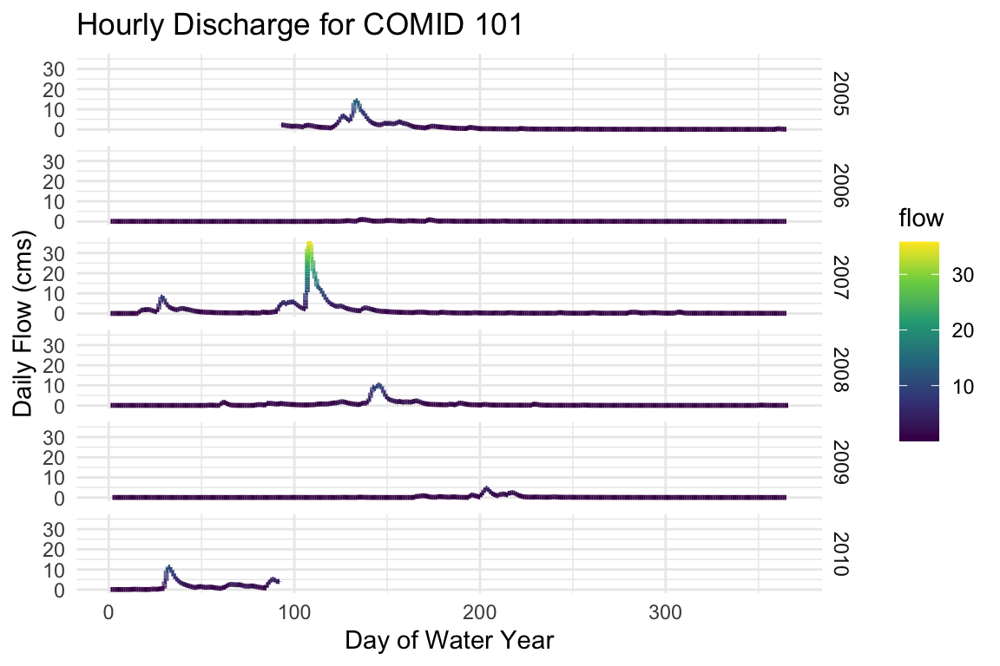
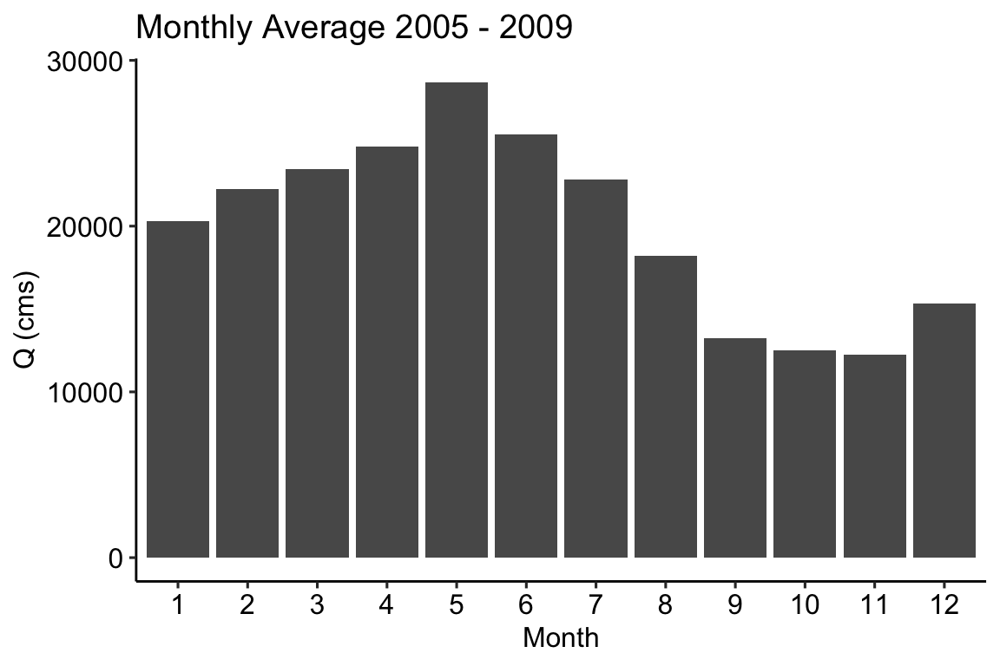
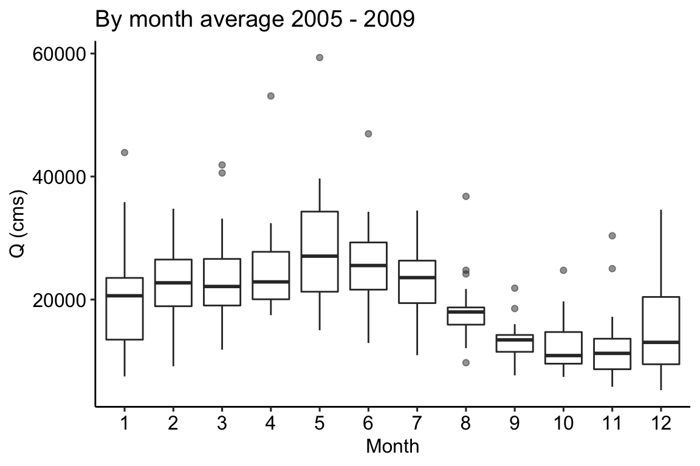
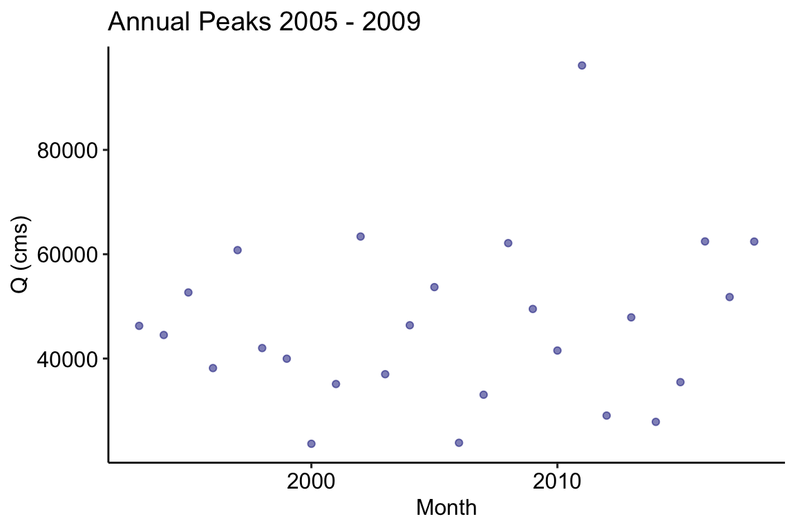
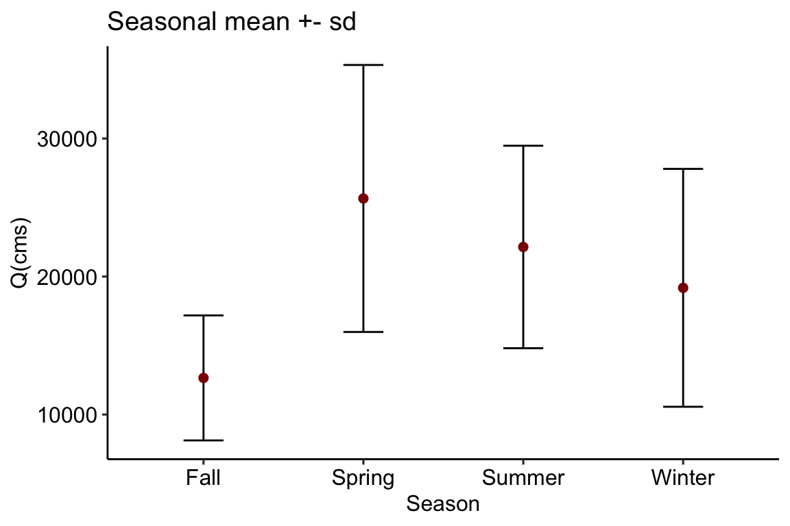

Raw reanalysis data comes in hourly time intervals. For many analyses, different time aggregates are needed (e.g. by year, by-month …). To facilitate temporal aggregations and summaries, the nwmHistoric package provides a split_time function and a family of aggregation functions.
Split-time
split_time in a convenience function to break the hourly time stamps into base temporal units. In addition to the basic year, month, day, and hour, the season, water year, and Day-of-Water Year (DOWY) are added:
# Get 5-years of data and split the time attribute st = readNWMdata(comid = 101, startDate = "2005-01-01", endDate = "2009-12-31") %>% split_time() head(st) #> model comid time flow year month day hour season wy julian #> 1 NWM2 101 2005-01-01 00:00:00 2.33 2005 1 1 0 Winter 2005 1 #> 2 NWM2 101 2005-01-01 01:00:00 2.32 2005 1 1 1 Winter 2005 1 #> 3 NWM2 101 2005-01-01 02:00:00 2.31 2005 1 1 2 Winter 2005 1 #> 4 NWM2 101 2005-01-01 03:00:00 2.31 2005 1 1 3 Winter 2005 1 #> 5 NWM2 101 2005-01-01 04:00:00 2.30 2005 1 1 4 Winter 2005 1 #> 6 NWM2 101 2005-01-01 05:00:00 2.29 2005 1 1 5 Winter 2005 1 #> DOWY #> 1 93 #> 2 93 #> 3 93 #> 4 93 #> 5 93 #> 6 93
Using the split time attributes, we can plot the hourly flow records by water-year, grouped by water-year:
ggplot(data = st, aes(x = DOWY, y = flow, color = flow)) + geom_line(size = 1) + facet_grid(wy~.) + labs(y= "Daily Flow (cms)", x= "Day of Water Year", title="Hourly Discharge for COMID 101") + scale_color_viridis_c() + theme_minimal()

Aggregation
Often you might want to split and summarize your data, for example “average monthly flow” or “median annual flow”. For these tasks, a family of aggregation methods allow users to define an temporal unit via the method name, and pass summarizing function(s) as parameters. Signiture names follow the pattern of aggregate_* where * represents the common date (and hydro-specific) symbols seen below.
| Symbol | Aggregate |
|---|---|
| y | year |
| m | month |
| d | day of moth |
| doy | day of year |
| j | Julian day |
| s | season |
| wy | water year |
| dowy | day of water year |
These symbols can be combined to provide useful, common aggregation patterns, 14 of these are included the package (some are shown below):
| Aggregate Unit Symbol | Description |
|---|---|
| *_record | Entire Record |
| *_y | Year |
| *_m | Month |
| *_j | Julian Day |
| *_s | season |
| *_wy | Water Year |
| *_ym | Year and Month |
| *_yj | Year and Julian day |
| *_ymd | Day of the Year |
| *_ys | Year and Season |
| *_wym | Water Year and Month |
| *_wymd | Julian Day of the Water Year |
| *_wys | Water Year and Season |
| *_dowy | Day of Water Year |
Examples
First lets grab some data for a COMID found near Baton Rouge, LA along the Mississippi.
flows = readNWMdata(comid = 19085515)
Single function
Using the flow data grabbed above, we might be interested in seeing the monthly mean flow rates across the dataset. We can do this by passing the flow records to aggregate_m (m = month) and using mean as the function:
# Aggregate hourly flows to monthly averages by year monthly = aggregate_m(flows, mean) ggplot(data = monthly) + geom_col(aes(x = factor(month), y = flow)) + theme_pubr() + labs(x = "Month", y = "Q (cms)", title = 'Monthly Average 2005 - 2009')

Alternatively we might be interested in the monthly variability in each year. We can do this by passing the flow records to aggregate_ym (ym = year,month) and using mean as the summarizing function:
# Aggregate hourly flows to monthly averages by year ym = aggregate_ym(flows, mean) ggplot(data = ym, aes(x = factor(month), y = flow)) + geom_boxplot(alpha = .5) + theme_pubr() + labs(x = "Month", y = "Q (cms)", title = 'By month average 2005 - 2009')

# Aggregate hourly flows to monthly averages by year peak = aggregate_y(flows, 'max') ggplot(data = peak, aes(x = year, y = flow)) + geom_point(color = "navy", alpha = .5) + theme_pubr() + labs(x = "Month", y = "Q (cms)", title = 'Annual Peaks 2005 - 2009')

Multiple functions
So far we have only looked at passing mean to aggregate_* but multiple functions can also be passed as a vector. The following code returns the seasonal (s) mean and standard deviation.
# Aggregate by season seasons = aggregate_s(flows, fun = c('mean', 'sd')) ggplot(data = seasons, aes(x = season, y = flow_mean)) + geom_errorbar(aes(ymin=flow_mean - flow_sd, ymax=flow_mean + flow_sd, width = .25)) + geom_point(color = "darkred", size = 2) + theme_pubr() + labs(x = "Season", y = "Q(cms)", title = "Seasonal mean +- sd")

Custom Functions
Equally important, you are not limited to base R functions. Instead you can pass any function to fun that works over a vector of streamflow elements. In the code below we ask for a number of percentiles along with some other summary statistics:
# Aggregate by Julien Day jul = aggregate_j(flows, fun = c( n05 = function(x){quantile(x,.05)}, n25 = function(x){quantile(x,.25)}, n75 = function(x){quantile(x,.75)}, n95 = function(x){quantile(x,.95)}, median = median, mean = mean, min = min, max = max)) ggplot(data = jul, aes(x = julian)) + geom_ribbon(aes(ymin=flow_min, ymax=flow_max), fill="#B2DFEE") + geom_ribbon(aes(ymin=flow_n05, ymax=flow_n95), fill="#9AC0CD") + geom_ribbon(aes(ymin=flow_n25, ymax=flow_n75), fill="#68838B") + geom_line(aes(y = flow_mean), col = "#104E8B" ) + geom_line(aes(y = flow_median), col = "#AFEEEE") + theme_pubr() + labs(x = "Day of Year", y = "Q (cms)", title = "Flows Somewhere on the Mississippi...", subtitle = "26 years of record")